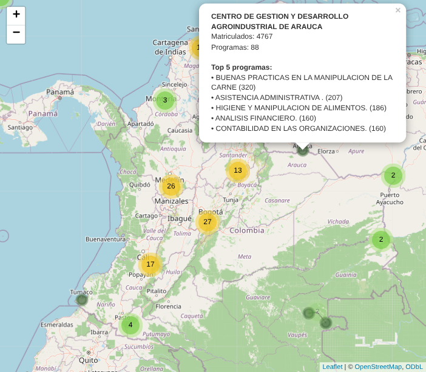
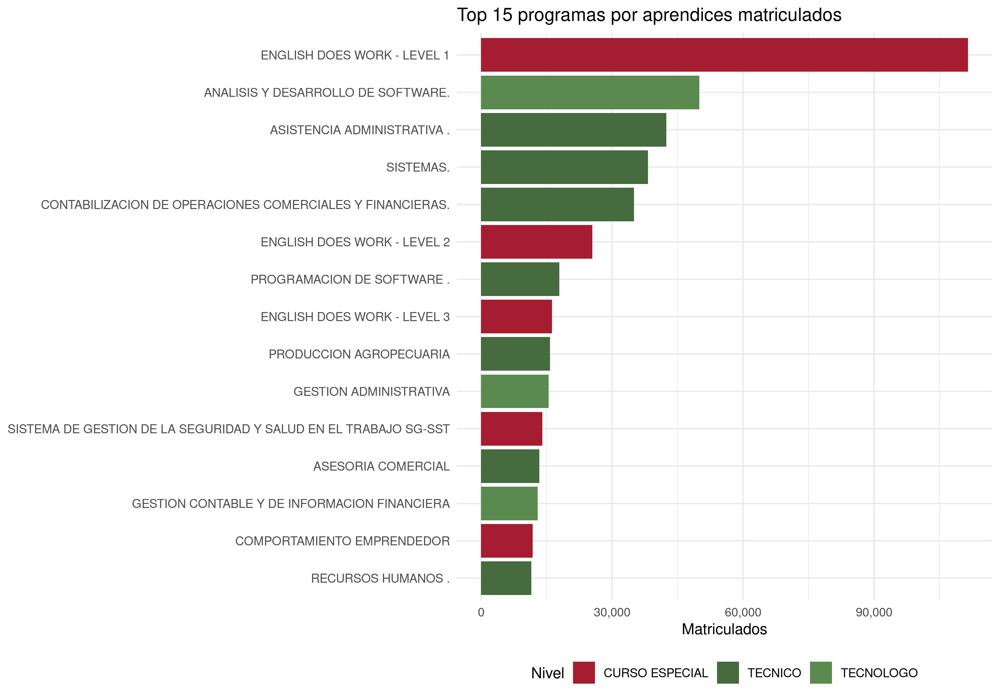
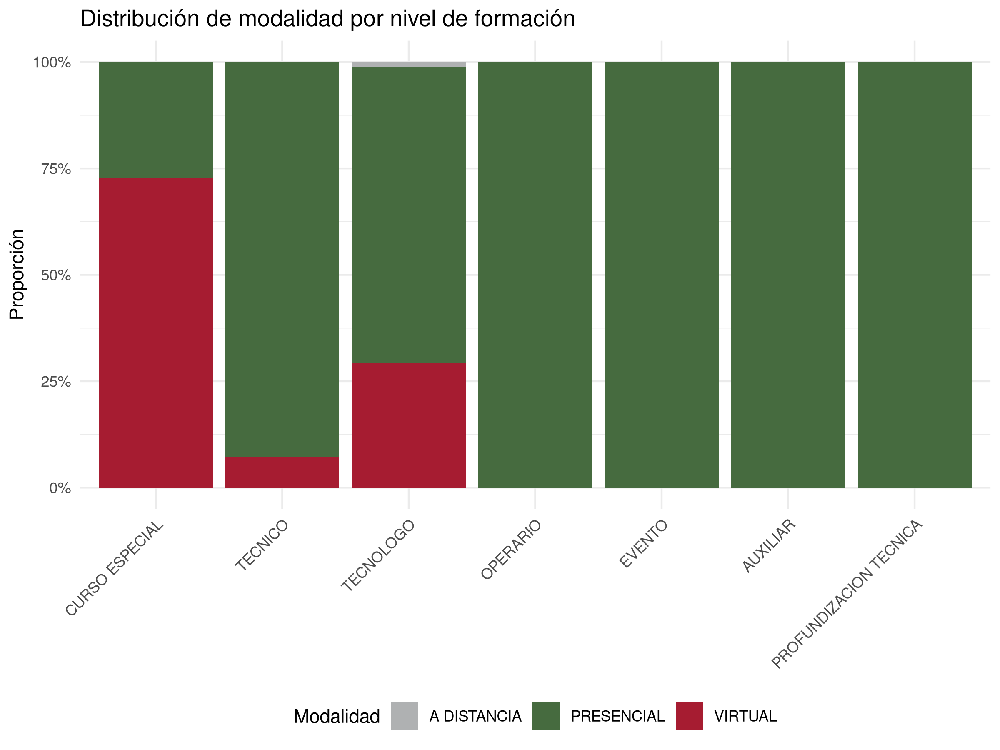
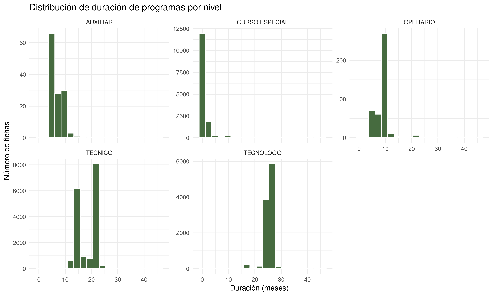
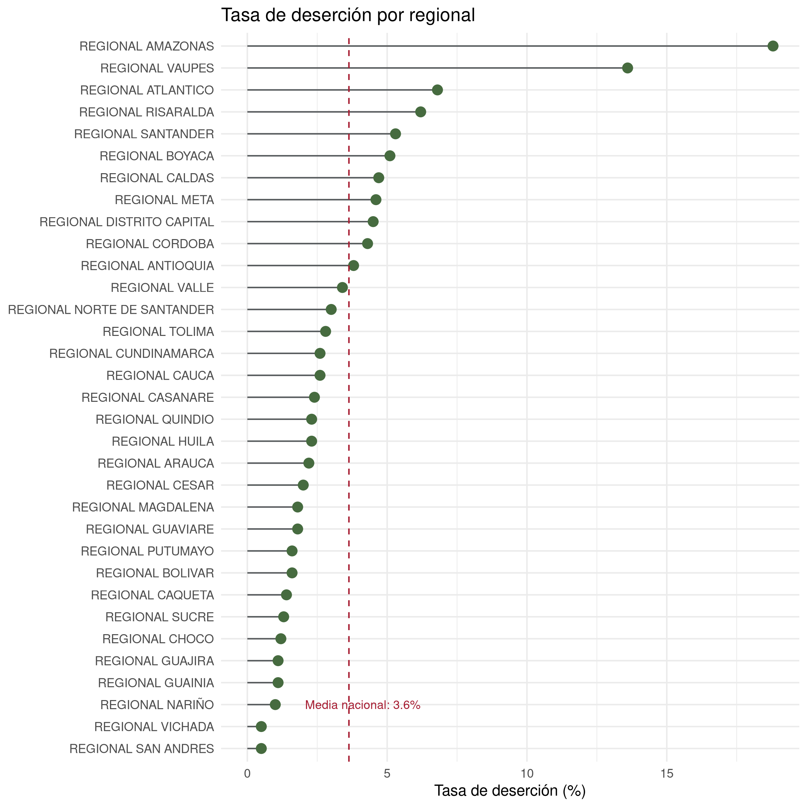
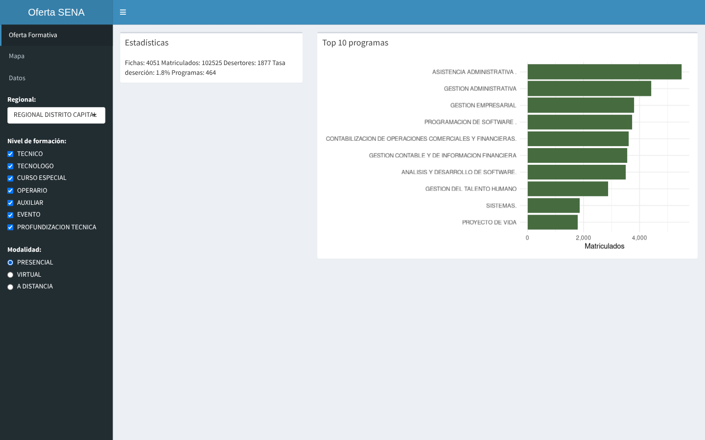
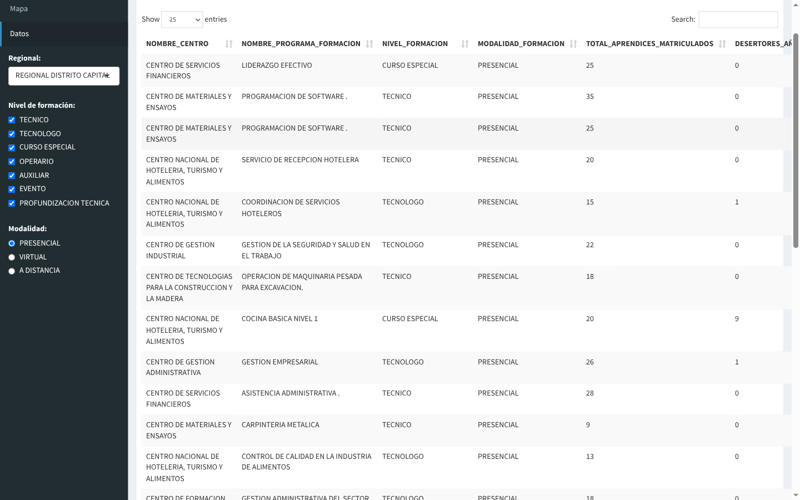

Proyecto de análisis y visualización de datos
Pipeline completo sobre datos abiertos del Estado colombiano: depuración y validación de fuentes, análisis estadístico, mapeo geográfico y un modelo predictivo de deserción. Construido íntegramente con software libre.
Los 118 centros del SENA georreferenciados sobre OpenStreetMap, con agrupamiento automático por densidad. Cada centro abre un panel con sus aprendices matriculados, número de programas y el top 5 de programas por matrícula.
Abrir el mapa
Reporte generado con Quarto que documenta el análisis de principio a fin e incluye un clasificador binario de deserción entrenado con tidymodels. Alcanza un ROC AUC de 0,787 sobre una línea base exigente: el 75,7 % de las fichas no registra ningún desertor.
Ver el reporteConcentración por programa, distribución entre modalidades y niveles, duración típica de la formación y deserción comparada entre las 33 regionales.




Esta página publica el mapa y el reporte como sitio estático, para que se puedan consultar sin instalar nada. El proyecto incluye además una aplicación Shiny cuyos filtros —regional, nivel de formación y modalidad— recalculan en vivo las estadísticas, la gráfica de programas y una tabla de datos con búsqueda y paginación. Esa parte necesita un proceso de R corriendo, así que vive en el repositorio y se levanta al clonarlo.
El mapa que ves arriba es idéntico al de la aplicación: se construye con el mismo código y sobre el dataset completo.
Ver el código en GitHub

El dataset crudo llega con comillas embebidas, fechas sin parsear y sin columnas derivadas. El pipeline valida la completitud de ambas fuentes, normaliza el texto, convierte las fechas, deriva las métricas por ficha y cruza las estadísticas por centro con sus coordenadas.